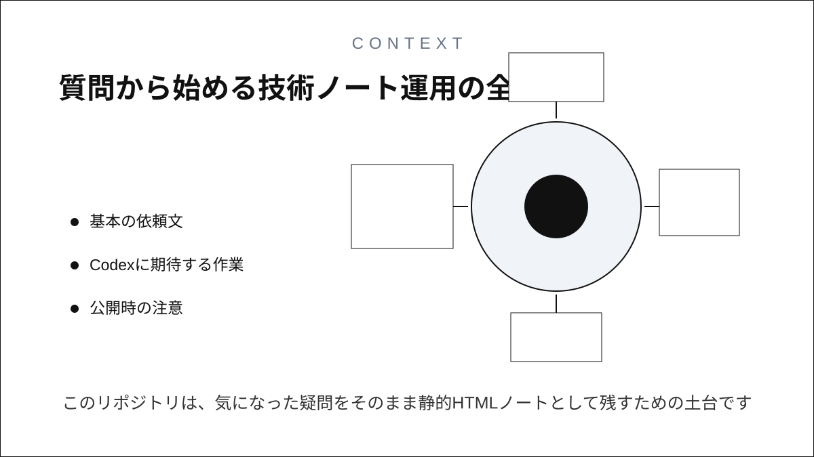
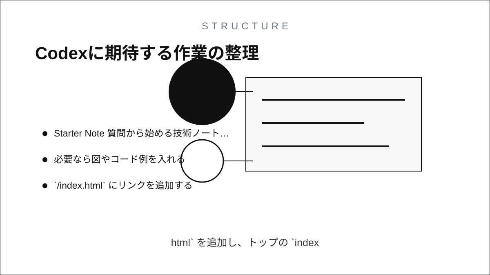
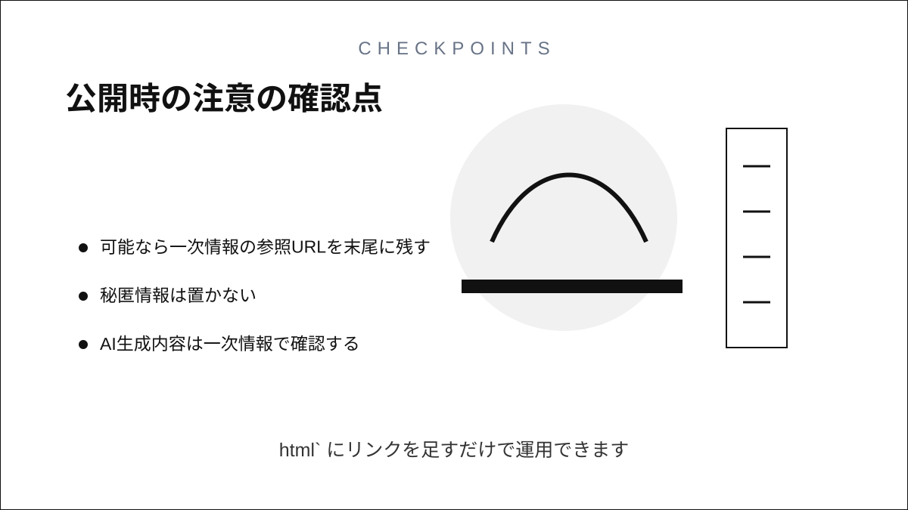

Starter Note
質問から始める技術ノート運用


このリポジトリは、気になった疑問をそのまま静的HTMLノートとして残すための土台です。 ビルドは不要で、`questions/<slug>/index.html` を追加し、トップの `index.html` にリンクを足すだけで運用できます。
基本の依頼文
質問: Rustのownershipとborrowの違いを、図解つきのHTMLノートで追加して。Codexに期待する作業
- 新しいノートを `questions/<slug>/index.html` に作る
- 必要なら図やコード例を入れる
- `/index.html` にリンクを追加する
- 可能なら一次情報の参照URLを末尾に残す
公開時の注意
- 秘匿情報は置かない
- AI生成内容は一次情報で確認する
- 公開前に差分を目視確認する
